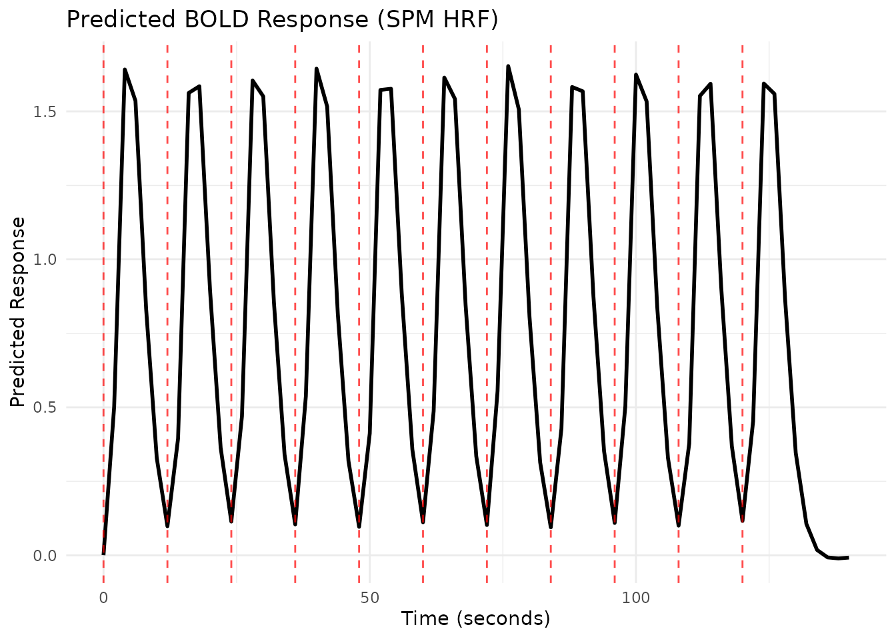
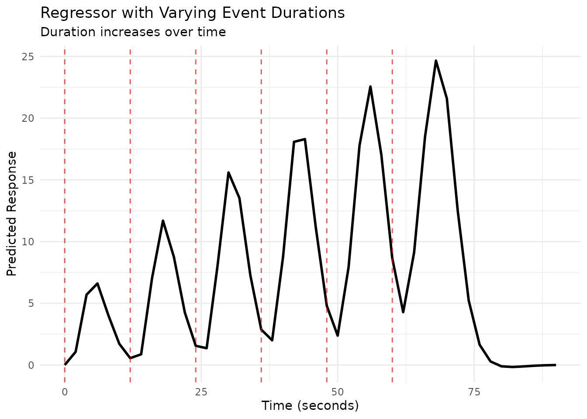
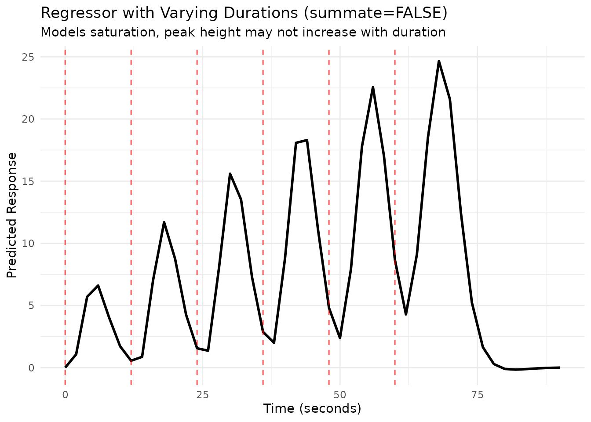
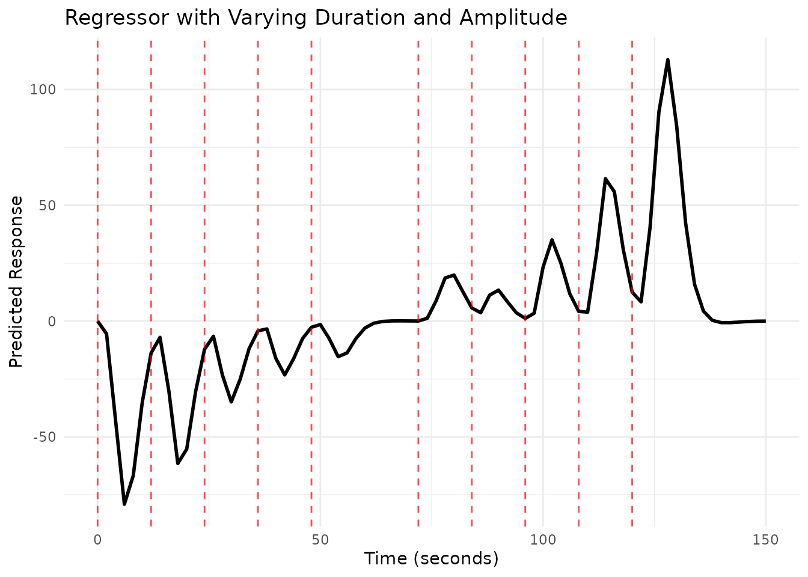
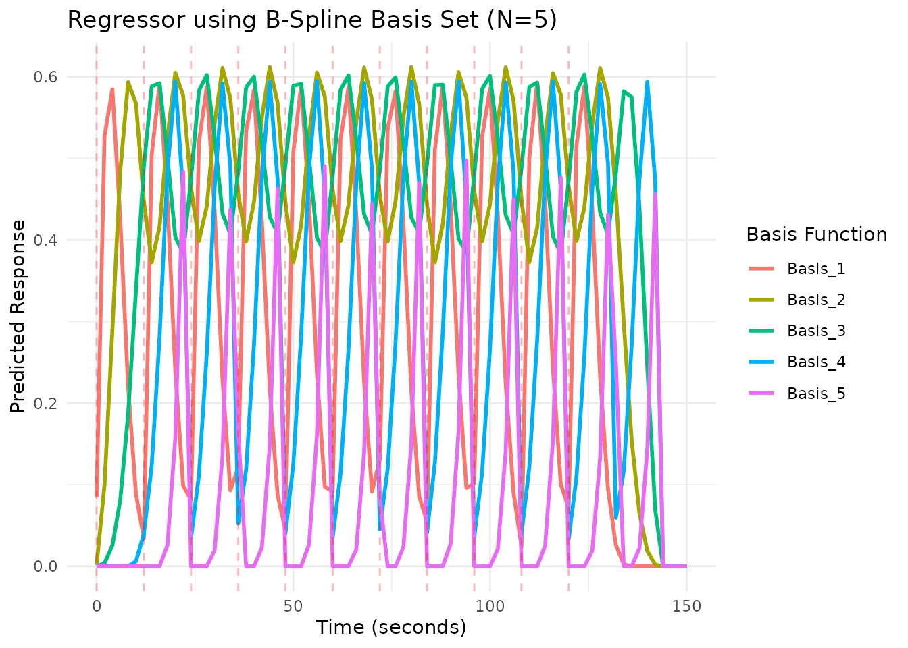

Building fMRI Regressors
Bradley R. Buchsbaum
2025-08-02
Source:vignettes/a_02_regressor.Rmd
a_02_regressor.RmdIntroduction: What is a Regressor?
In fMRI analysis, a regressor (or predictor) represents the expected BOLD signal timecourse associated with a specific experimental condition or event type. It’s typically created by convolving a series of event onsets (often represented as delta functions or “sticks”) with a hemodynamic response function (HRF).
fmrihrf provides the regressor() function
to easily create these objects from event timings and an HRF. While
these regressor objects are often constructed automatically by modeling
functions in other packages, this vignette explores how to create and
manipulate them directly, offering finer control over the model
components.
Basic Regressor from Event Onsets
Suppose we have a simple event-related fMRI design with stimuli
presented every 12 seconds. We want to model these events using the SPM
canonical HRF (HRF_SPMG1). The events are brief, so we
model them with a duration of 0 seconds (instantaneous).
# Define event onsets
onsets <- seq(0, 10 * 12, by = 12)
# Create the regressor object
# Uses HRF_SPMG1 by default if no hrf is specified
# Duration is 0 by default
reg1 <- regressor(onsets = onsets, hrf = HRF_SPMG1)
# Print the regressor object to see its properties (uses new print.Reg method)
print(reg1)
# Access components using helper functions
head(onsets(reg1))
#> [1] 0 12 24 36 48 60
nbasis(reg1)
#> [1] 1Evaluating and Plotting a Regressor
A regressor object stores the event information but
doesn’t automatically compute the timecourse. To get the predicted BOLD
signal at specific time points (e.g., corresponding to scan acquisition
times), we use the evaluate() function.
# Define a time grid corresponding to scan times (e.g., TR=2s)
TR <- 2
scan_times <- seq(0, 140, by = TR)
# Evaluate the regressor at scan times
predicted_bold <- evaluate(reg1, scan_times)
# Plot the predicted timecourse using ggplot2
plot_df <- data.frame(Time = scan_times, Response = predicted_bold)
ggplot(plot_df, aes(x = Time, y = Response)) +
geom_line(linewidth = 1) +
geom_vline(xintercept = onsets(reg1), linetype = "dashed", color = "red", alpha = 0.7) +
labs(title = "Predicted BOLD Response (SPM HRF)",
x = "Time (seconds)",
y = "Predicted Response") +
theme_minimal()
Varying Event Durations
Sometimes events have different durations. The duration
argument in regressor() can take a vector matching the
length of onsets.
# Example onsets and durations
onsets_var_dur <- seq(0, 5 * 12, length.out = 6)
durations_var <- 1:length(onsets_var_dur) # Durations increase from 1s to 6s
# Create regressor with varying durations
reg_var_dur <- regressor(onsets_var_dur, HRF_SPMG1, duration = durations_var)
print(reg_var_dur)
# Evaluate and plot
scan_times_dur <- seq(0, max(onsets_var_dur) + 30, by = TR)
pred_var_dur <- evaluate(reg_var_dur, scan_times_dur)
plot_df_dur <- data.frame(Time = scan_times_dur, Response = pred_var_dur)
ggplot(plot_df_dur, aes(x = Time, y = Response)) +
geom_line(linewidth = 1) +
geom_vline(xintercept = onsets(reg_var_dur), linetype = "dashed", color = "red", alpha = 0.7) +
labs(title = "Regressor with Varying Event Durations",
subtitle = "Duration increases over time",
x = "Time (seconds)",
y = "Predicted Response") +
theme_minimal()
Duration and Summation
By default (summate=TRUE), the predicted response
accumulates if events overlap or have extended duration. Setting
summate=FALSE models saturation, where the response width
increases with duration, but the peak amplitude doesn’t necessarily.
# Create regressor with varying durations, summate=FALSE
reg_var_dur_nosum <- regressor(onsets_var_dur, HRF_SPMG1,
duration = durations_var, summate = FALSE)
# Evaluate and plot
pred_var_dur_nosum <- evaluate(reg_var_dur_nosum, scan_times_dur)
plot_df_dur_nosum <- data.frame(Time = scan_times_dur, Response = pred_var_dur_nosum)
ggplot(plot_df_dur_nosum, aes(x = Time, y = Response)) +
geom_line(linewidth = 1) +
geom_vline(xintercept = onsets(reg_var_dur_nosum), linetype = "dashed", color = "red", alpha = 0.7) +
labs(title = "Regressor with Varying Durations (summate=FALSE)",
subtitle = "Models saturation, peak height may not increase with duration",
x = "Time (seconds)",
y = "Predicted Response") +
theme_minimal()
Varying Event Amplitudes (Parametric Modulation)
We can model variations in event intensity or some associated
parameter by providing an amplitude vector. This creates a
parametric regressor where the height of the HRF for each event
is scaled by the corresponding amplitude value.
# Example onsets and amplitudes (e.g., representing task difficulty)
onsets_amp <- seq(0, 10 * 12, length.out = 11)
amplitudes_raw <- 1:length(onsets_amp)
# It's common practice to center the modulator
amplitudes_scaled <- scale(amplitudes_raw, center = TRUE, scale = FALSE)
# Create the parametric regressor
reg_amp <- regressor(onsets_amp, HRF_SPMG1, amplitude = amplitudes_scaled)
print(reg_amp)
# Evaluate and plot
scan_times_amp <- seq(0, max(onsets_amp) + 30, by = TR)
pred_amp <- evaluate(reg_amp, scan_times_amp)
plot_df_amp <- data.frame(Time = scan_times_amp, Response = pred_amp)
ggplot(plot_df_amp, aes(x = Time, y = Response)) +
geom_line(linewidth = 1) +
geom_vline(xintercept = onsets(reg_amp), linetype = "dashed", color = "red", alpha = 0.7) +
# Add points showing amplitude (scaled for visibility)
geom_point(data = data.frame(Time = onsets(reg_amp), Amplitude = amplitudes(reg_amp)),
aes(x = Time, y = Amplitude * 0.2), color = "blue", size = 2) +
labs(title = "Parametric Regressor with Varying Amplitude",
subtitle = "Amplitude (centered) increases over time",
x = "Time (seconds)",
y = "Predicted Response") +
theme_minimal()Combining Duration and Amplitude Modulation
You can provide both duration and amplitude
vectors to model events that vary in both aspects.
set.seed(123)
onsets_comb <- seq(0, 10 * 12, length.out = 11)
amps_comb <- scale(1:length(onsets_comb), center = TRUE, scale = FALSE)
durs_comb <- sample(1:5, length(onsets_comb), replace = TRUE)
reg_comb <- regressor(onsets_comb, HRF_SPMG1,
amplitude = amps_comb, duration = durs_comb)
print(reg_comb)
# Evaluate and plot
scan_times_comb <- seq(0, max(onsets_comb) + 30, by = TR)
pred_comb <- evaluate(reg_comb, scan_times_comb)
plot_df_comb <- data.frame(Time = scan_times_comb, Response = pred_comb)
ggplot(plot_df_comb, aes(x = Time, y = Response)) +
geom_line(linewidth = 1) +
geom_vline(xintercept = onsets(reg_comb), linetype = "dashed", color = "red", alpha = 0.7) +
labs(title = "Regressor with Varying Duration and Amplitude",
x = "Time (seconds)",
y = "Predicted Response") +
theme_minimal()
Regressors with HRF Basis Sets
If you use an HRF object with multiple basis functions (e.g.,
HRF_SPMG3, HRF_BSPLINE), the
regressor object will represent multiple timecourses, one
for each basis function. evaluate() will return a
matrix.
# Use a B-spline basis set
onsets_basis <- seq(0, 10 * 12, length.out = 11)
hrf_basis <- HRF_BSPLINE # Uses N=5 basis functions by default
reg_basis <- regressor(onsets_basis, hrf_basis)
print(reg_basis)
nbasis(reg_basis) # Should be 5
#> [1] 5
# Evaluate - this returns a matrix
scan_times_basis <- seq(0, max(onsets_basis) + 30, by = TR)
pred_basis_matrix <- evaluate(reg_basis, scan_times_basis)
dim(pred_basis_matrix) # rows = time points, cols = basis functions
#> [1] 76 5
# Or plot manually with ggplot
colnames(pred_basis_matrix) <- paste0("Basis_", 1:ncol(pred_basis_matrix))
plot_df_basis <- as.data.frame(pred_basis_matrix) %>%
mutate(Time = scan_times_basis) %>%
pivot_longer(-Time, names_to = "Basis", values_to = "Response")
ggplot(plot_df_basis, aes(x = Time, y = Response, color = Basis)) +
geom_line(linewidth = 1) +
geom_vline(xintercept = onsets(reg_basis), linetype = "dashed", color = "red", alpha = 0.3) +
labs(title = "Regressor using B-Spline Basis Set (N=5)",
x = "Time (seconds)",
y = "Predicted Response",
color = "Basis Function") +
theme_minimal()
Shifting Regressors
You can temporally shift all onsets within a regressor using the
shift() method.
# Original regressor
reg_orig <- regressor(onsets = c(10, 30, 50), hrf = HRF_SPMG1)
# Shifted regressor (delay by 5 seconds)
reg_shifted <- shift(reg_orig, shift_amount = 5)
onsets(reg_orig)
#> [1] 10 30 50
onsets(reg_shifted) # Onsets are now 15, 35, 55
#> [1] 15 35 55
# Plot both
scan_times_shift <- seq(0, 80, by = TR)
pred_orig <- evaluate(reg_orig, scan_times_shift)
pred_shifted <- evaluate(reg_shifted, scan_times_shift)
plot_df_shift <- data.frame(
Time = scan_times_shift,
Original = pred_orig,
Shifted_p5s = pred_shifted
) %>%
pivot_longer(-Time, names_to = "Regressor", values_to = "Response")
ggplot(plot_df_shift, aes(x = Time, y = Response, color = Regressor)) +
geom_line(linewidth = 1) +
geom_vline(xintercept = onsets(reg_orig), linetype = "dashed", color = "red", alpha = 0.5) +
geom_vline(xintercept = onsets(reg_shifted), linetype = "dashed", color = "blue", alpha = 0.5) +
labs(title = "Shifting a Regressor",
subtitle = "Original (red lines) vs. Shifted +5s (blue lines)",
x = "Time (seconds)",
y = "Predicted Response") +
theme_minimal()